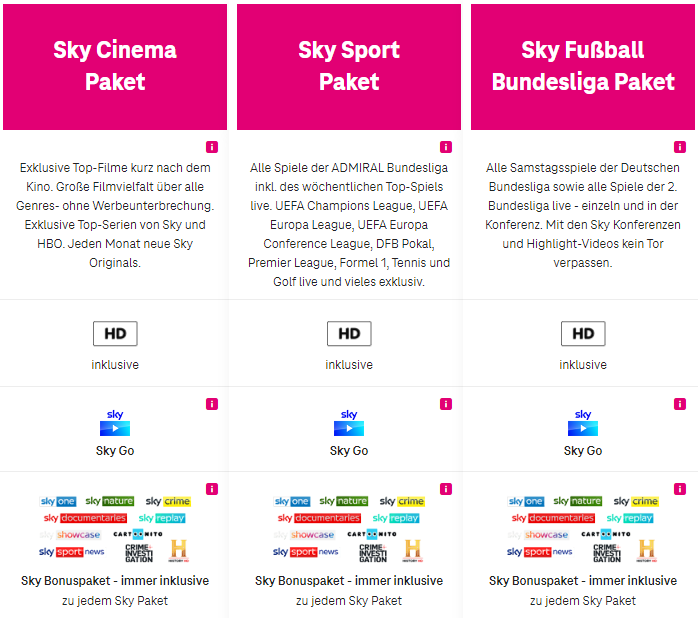

Seit gestern kein Empfang des Senders 727. 🤬 was ist der Grund dafür?
@MrsBunt ,
da es sich hier um ein User hilft User Forum handelt, ist es am besten, wenn du dich bei technischen Einschränkungen in dieser Form direkt bei unseren Techniker:innen unter 0676 200 7777 meldest.
